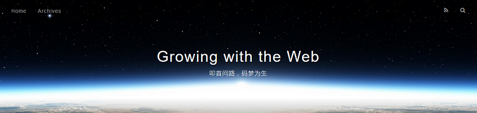

Hexo 所初始化的站点文件夹根目录下的 ._config.yml 文件声明了网站的配置信息，我们可以通过修改此文件的配置参数以个性化网站。
配置文件_config.yml
Hexo 生成的网站的配置信息均保存在 ._config.yml 文件中，该文件位于站点文件夹下的根目录下。
我们可以通过修改 ._config.yml 文件中的参数配置来自定义 Hexo 生成的静态站点。
使用文本编辑器打开该文件，我们会发现其中有详尽的参数，这里只选取一部分具有代表性的参数配置进行介绍。详情戳这里 ⇨ 配置。
网站相关
title：网站标题subtitle：网站副标题description：网站描述author：作者名字
网址相关
url：网址root：网站根目录
文章相关
auto_spacing：在中文和英文之间加入空格，默认值为 falseexternal_link：在新标签中打开链接，默认值为 truerender_drafts：显示草稿，默认值为 falsepost_asset_folder：开启文章地资源管理文件夹，默认值为 falsehighlight：代码块的设置，包括有enable、line_number、auto_detect和tab_replace属性可设置。不过一般不用修改，大多数主题都默认是支持代码语法高亮等设置的。
分页相关
per_page：每页显示的文章数，默认值为 10，值为 0 时会关闭分页功能
新建菜单页
Hexo 生成的站点默认菜单也有限，如果我们想自定义添加菜单页该怎么操作呢？比如说，我们想新建一个名为 Abou 的菜单页。
站点根目录下，命令行中输入：
|
|
上面的命令生效以后，根目录下的 source 文件夹中会新增一个名为 about 的文件夹，里面有个 index.md 文档。我们将想要在 About 菜单页中显示的内容，按照博文格式写在这个文档里即可。
然后，修改 ./themes/your-theme-name/_config.yml 文件中的 menu 项，在下面添加一行 About: /about 即可。
示范
下图是我修改了网站相关配置参数值之后的网站首页，可以很明显地看出与网站标题与副标题发生了变化。
